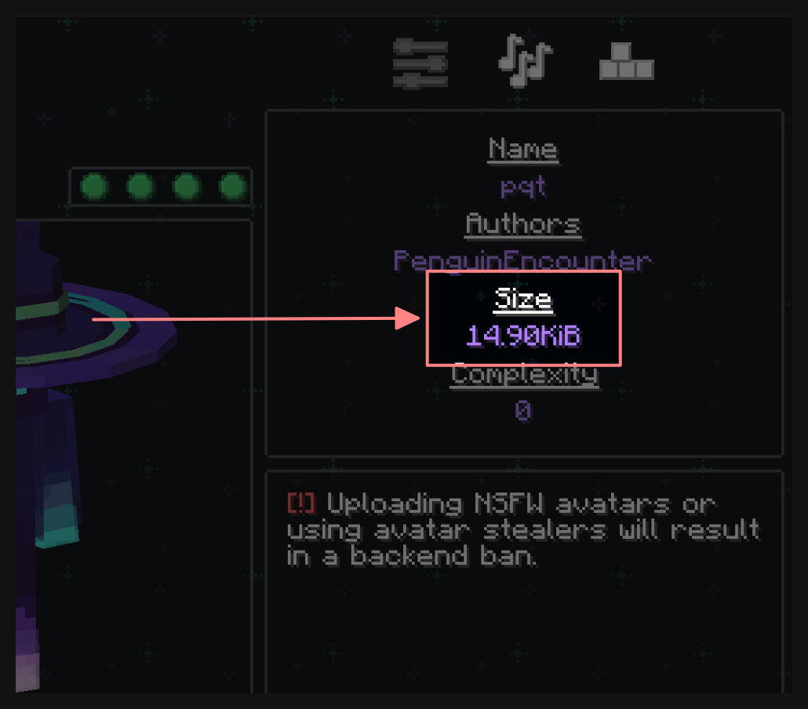
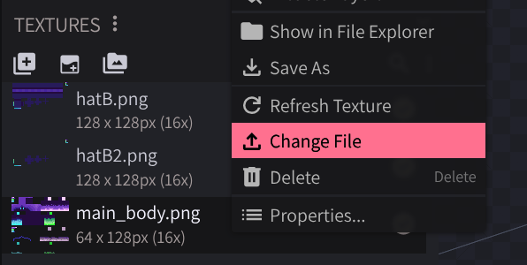

written for Figura 0.1.x by penguinencounter
with help from Total, FOX, Manuel, and JimmyHelp <3
There's a 100 KB limit on your avatar. If you exceed this, you won't be able to upload it to the main backend.
Skip to the compression strategies
Note
Okay, so it's actually 100 KiB (kibibytes); that's 102,400 bytes.
Boxes like this contain extra information for more advanced users. If you want all the details, you can click the bold text or the adjacent arrow to expand the box. (All future boxes will be collapsed by default.)
These boxes are not required and most people don't need to read them. Feel free to skip them!
You can check how big your avatar is in the information box on the right side of the Figura menu. This is the number you need to keep track of.

Opening your avatar folder and looking at the file sizes is not a good way to judge what is taking up space in your avatar.
Instead, run /figura debug in-game to get a report of
what's going on with your avatar, including, among other things, a
breakdown of how its space is used.
You can then read the outputted file yourself (hint: scroll to the bottom), or upload it to Discord for someone else to analyze.
That's right! Figura does its best to get rid of data that isn't necessary in scripts and models.
However, the rest of the avatar's content is pretty much used as-is; that means that textures and sounds generally take up most of the space in an avatar.
Note
So, there's a bit more to it than that. Beyond just stripping unnecessary information from avatars, Figura also runs your entire avatar through the deflate compression algorithm as the final step in producing a compiled avatar.
You shouldn't really worry about optimizing your avatar to play well with this final compression layer; just think of it as free extra space. The only time this really plays a major part in compression is when you have multiple copies of the same asset in your avatar, where it can help mitigate the cost of the duplicated asset. Of course, duplicating assets is not free; you should avoid duplication whenever possible.
Remember that there is no magic solution. If your avatar is 1 MiB, there is likely nothing you can do to cut your avatar's size by 1/10 without giving up some of your avatar's content.
Can you split this avatar into multiple smaller avatars?
If you have, say, 5 different characters in a single avatar, you realistically only need one character at a time. Splitting the avatar into five would let you use the whole 100 KB for each one.
.Consider using Minecraft's built-in sounds instead of custom sounds. They don't take up any space!
Reduce the quality with audio editing software, like Audacity.
Use a texture compressor to reduce the size of your textures, like PNGGauntlet (Windows).
Ensure that your textures are in your avatar folder and properly linked to your model files.

Reduce the number of colors in your textures! Textures with fewer colors compress better.
Remove empty space from your textures. Rectangular textures are fine.
If you have many color variations on the same texture, consider making a single grayscale texture and tinting it with a script instead.
Note
oxipng at high effort can apparently do better than PNGGauntlet? You can run it in your browser at in squoosh.app, just make sure you select OxiPNG and don't accidentally make a JPEG or something
Images with indexed colors (<256 colors) can be palette-swapped with the colormagic library (#selfpromo), which lets you work with hue-shifted palettes. This is really not recommended for newer Figura users. Feel free to ping penguinencounter for help setting this up.
You can also manually create palette swaps. If you make sure the palette is laid out the same way on each of them, the aforementioned final DEFLATE pass will take care of most of the overhead! This is quite difficult to pull off without the right software, however (I know GIMP can do it, but the learning curve for that is a cliff)
If scripts are really the problem, you can adjust the Format Script setting in Figura's settings to change how aggressively it tries to compact your scripts.
Removing scripts you don't care about or aren't using is always an option.
Note
If you have a lot of scripts that only run on the host for some reason, you can
read them from the data folder instead of including them as part of the avatar.
The same goes for host-only textures and sounds.
Avoid meshes. Meshes use way more data (~4x) than cubes to store.
If you want to keep using meshes, your priorities should be reducing the number of vertices and removing unnecessary faces. If you can't see a face in normal gameplay, it doesn't need to exist! Get rid of it!
If you have multiple variants of your model, try to see if you can accomplish this by switching textures or smaller parts of your model, rather than having multiple redundant copies of parts.
Note
If you're up for it, here's some extra stuff you can do:
For meshes, use quads over tris when possible. Tris are converted to quads by Figura, so dividing a quad into two tris just uses more space for the same result.
Try to keep things at the default values (in most places, the 'default' is (0, 0, 0)).
Figura can delete values that are set to their defaults, which saves a few bytes of space each
time. (This is pretty much only useful for pivot points.)
(-0.1, 0.0) and (+0.1, 0.0).
Note
The post this article was based on recommended truncating numbers (reducing the number of digits) in models and scripts to save space. This isn't quite correct.
Most numbers in a model file are stored in 32 or 64 bits regardless of how many digits they have. The only exception is in fields that also have text in them (ex. instruction keyframes and scripts.)
Because of the deflate compression algorithm used, using the same numbers in multiple places may save a few bytes.